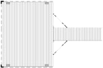
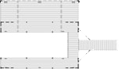
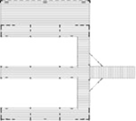
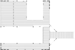

With us, custom dock design is not an exclusive option. Every boat dock we build is as individual as you are, tailored to your desires, needs, and specifications.
Slips and styles, additions and accessories, colors and options. There are endless boat dock possibilities here at Flotation Systems, all designed with just one goal in mind: to craft exclusively for you the finest dock you can have.
Below is an overview of some of our many options in custom dock design, but by no means the only ones. If you can dream it, we can build it! Choose your favorites, then get a quote, contact your dealer, or get in touch with us directly to get started.
Dock Piers & Platforms

Need just a simple dock and swim platform, without a boat slip? We have dock piers and platforms that fit perfectly, offering an ideal spot for relaxation and fun with easy watercraft tie-up. Add a covered seating and entertaining area for those sunny (or less-than-perfect) days with a hip or gable shade.
Single Dock Slips

All our roofed docks – gable roof, hip roof, sundeck, and sundeck combo – are available with a single boat slip.
The dock slip entry point shown here is just one possibility – it can be placed as necessary to account for current, prevalent weather, and property requirements.
Dual Dock Slips

Gable roof, hip roof, sundeck, and sundeck combo docks are also available with two dock slips.
Traditional side-by side slips are ideal for two full-size watercraft (or personal watercraft with the addition of an optional dock slip fill-in).
Dual Dock Slips, Offset

For secure docking of a boat and a personal watercraft, docks may also be configured with one large slip and an offset PWC slip.
This design offers a little of everything – the shaded seating area provides a view of open water, and it’s friendlier for locations with tight permit restrictions.
Custom Options
Need something special? Have a dock area that requires an unusual entry? Have a dozen boats to dock?
We’re ready.
No matter how unique your waterfront, we can design a dock for you. Get in touch and give us your toughest challenge.
For every slip choice, the ramp/gangway attachment and dock anchoring system are completely configurable to suit your land and waterfront.